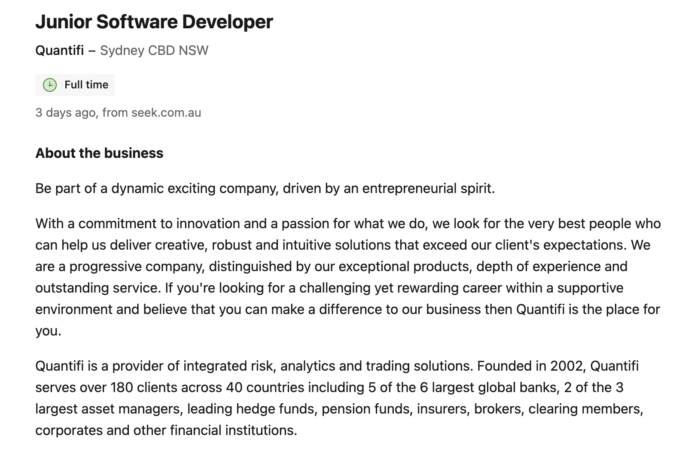
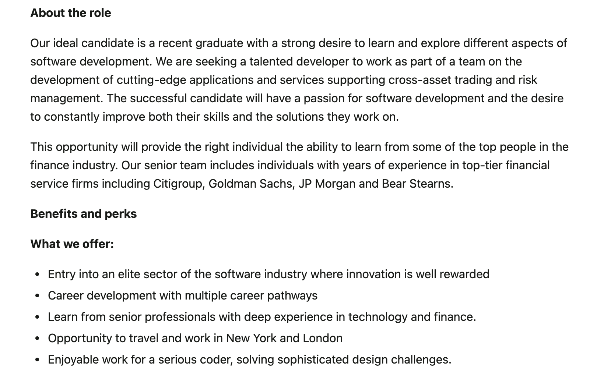
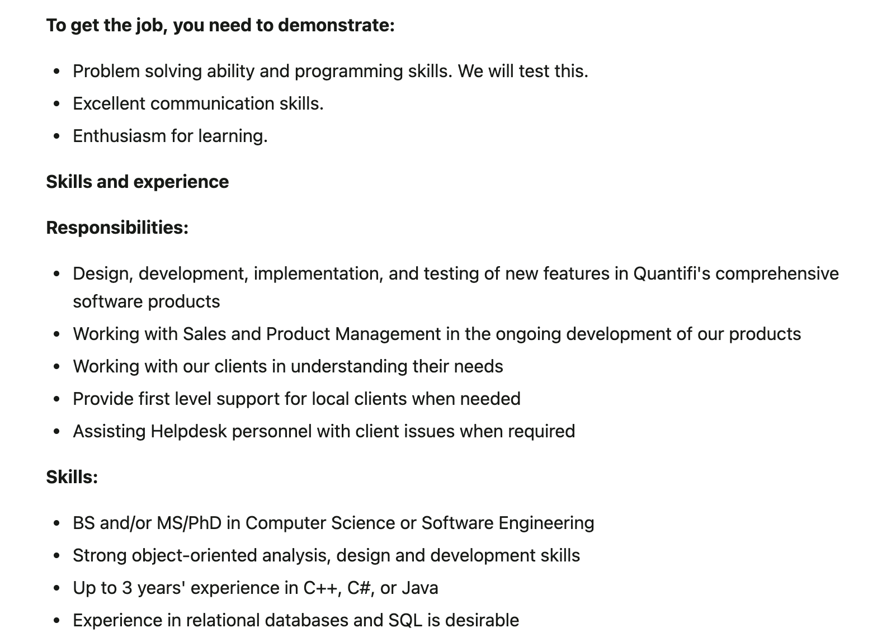

about me
Hi, everybody, my name is Shuning Xu. You can call me Shirley. I am from Hangzhou, China. And I can speak Chinese and English. This is my first year in RMIT, and I am studying Bachelor of Information Technology. After I finished my second year of high school in China, I came to Monash Collage to study for the foundation year course. Cause of some reasons, after graduation, I chose to study at RMIT.
I stayed in Melbourne for a year and a half. I really like the free and casual atmosphere of Melbourne. It makes me feel very relaxed.
I like to listen to songs, read books, eat delicious food with my friends and hang out with friends in my free time. I also want to challenge exciting rides, such as skydiving. If I have a chance in the future, I will definitely try it! My favourite sport is badminton, when I play badminton, I feel very relaxed. This sport makes me joyful.
Interest in IT
I am interested in mobile application making. With the development of IT industry, there are more and more applications on cell phones, and people's life becomes more and more convenient because of these applications. For example, in China, we used to need to bring cash when we go out to buy things, but now we just need to take our cell phones with us when we go out, and we can pay for almost all goods through our cell phones. I also benefit from the fact that when I am studying, I no longer need to look up a word I don't know through a dictionary as inefficiently as I do. I can just type in what I want to find on my phone accurately and efficiently. When I was in junior high school, I got my first smartphone and I downloaded many applications, which significantly improved my life. The usefulness of these applications has made me interested in the IT industry, especially the mobile application development. I began to learn about the IT industry and found that the industry is fair, the better you do, the more you get. It also has high returns and good development prospects, making me more interested in this industry. My first exposure to IT was in high school. However, everything is difficult at the beginning. All we learned was basic programming, but to be honest, I was very painful at the beginning and even wanted to give up, but my high school information technology teacher has been encouraging me. Slowly, I started to adapt, and I feel the joy of learning.
When I graduate form Monash Collage, I am hesitant to continue studying in Monash or transfer to RMIT. But finally, I chose to study in RMIT. I choose RMIT for many reasons. First of all, RMIT's information technology major is very famous and highly rated, I hope I can get a better education in my undergraduate degree. Also, the surrounding facilities of RMIT are very convenient. The most important reason is that my sister graduated from RMIT, she studied computer science and did very well, after graduation, she easily found a job. Her learning experience, the culture and learning atmosphere of RMIT she introduced to me made me choose to study at RMIT more firmly.
During the RMIT study, I want to learn more about knowledge of IT, I hope to improve my technical skills and be skilled in the application of Java, Python, HTML. These essential skills for future work lay the foundation.
- All


ideal job - Junior software developer
  This company’s junior software development engineer position hopes to find graduates interested in learning and exploring different types of software development and join them to develop cutting-edge applications and services that support cross-asset transactions and risk management. What attracts me to this company is that after joining, I can learn from senior personnel with extensive experience in technology and finance, enriching my knowledge. Besides, after entering, I can also choose other career paths, even I can have opportunity to study and work in London. This job requires me to have the following skills, qualifications and experience: o Computer Science /Software Engineering Degree o Proficient analysis, design and development skills o More than 3 years of experience in C++, C# or Java o Experience with relational databases and SQL is better
I have studied basic programming when I was in high school, and I am currently in college majoring in Information Technology. I have only been exposed to Python and SQL so far, which means I need to learn more about Java. Also, I will need to choose a major in Computer Science for my master's degree. Besides, I have no experience working in the IT industry, so I need to gain software production experience in my sophomore or junior year to strengthen my software analysis, design and development capabilities.
personality test
These three tests have given me a more detailed understanding of myself. The tests showed that I am a person who is better at working with others to complete tasks, more responsible and likes to help others, which are my strengths, and I need to keep them. However, at the same time, I am more introverted, do not like to change, and lack creativity and imagination, which are not suitable for me in my future study and work, so I need to change in order to achieve more in the future. When forming a team in the future, I need to improve my deficiencies, communicate more with others, and find teammates who can complement my weaknesses to help the team develop better.

{kind=link}
{kind=link}
{kind=link}